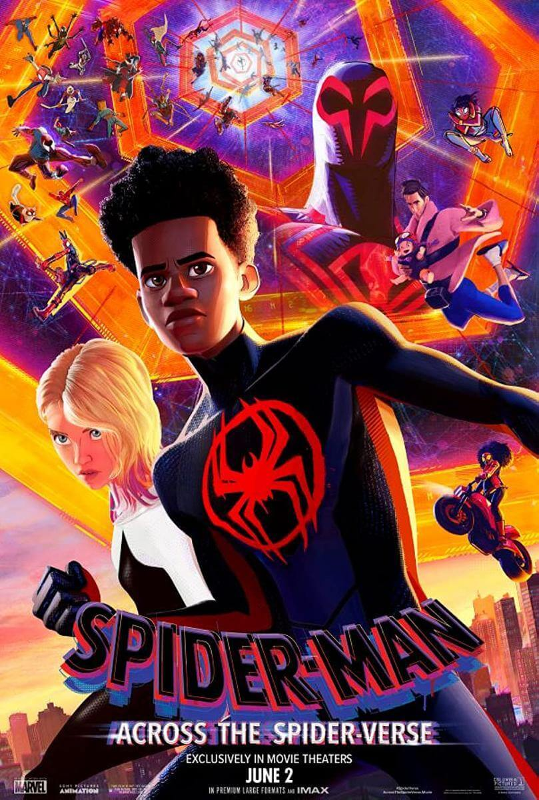

Después de reunirse con Gwen Stacy, Spider-Man, el amigable vecino de Brooklyn, es transportado a través del Multiverso, donde se encuentra con un equipo de Spider-Gente encargado de proteger su existencia. Pero cuando los héroes difieren acerca de cómo manejar una nueva amenaza, Miles se enfrenta a las otros Spiders y debe redefinir lo que significa ser un héroe para poder salvar a las personas que más ama.